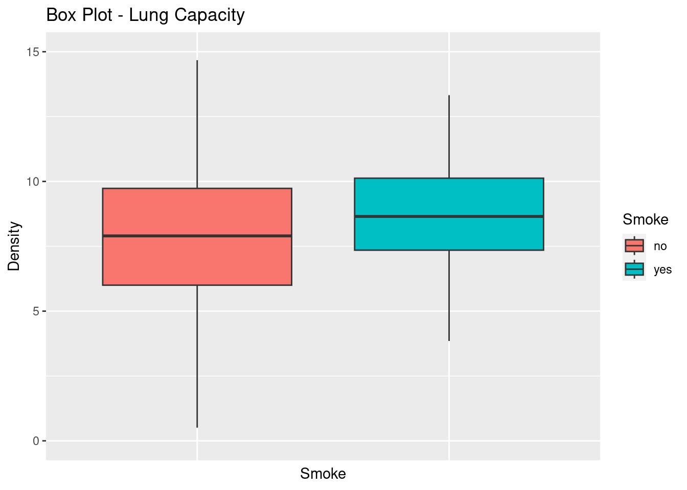

Code
knitr::opts_chunk$set(echo = TRUE, warning = FALSE)Felix Betanourt
February 24, 2023
DACSS 603, Spring 2023
Error in library(formattable): there is no package called 'formattable'Error in library(kableExtra): there is no package called 'kableExtra'Let’s first explore the database
Structure
tibble [725 × 6] (S3: tbl_df/tbl/data.frame)
$ LungCap : num [1:725] 6.47 10.12 9.55 11.12 4.8 ...
$ Age : num [1:725] 6 18 16 14 5 11 8 11 15 11 ...
$ Height : num [1:725] 62.1 74.7 69.7 71 56.9 58.7 63.3 70.4 70.5 59.2 ...
$ Smoke : chr [1:725] "no" "yes" "no" "no" ...
$ Gender : chr [1:725] "male" "female" "female" "male" ...
$ Caesarean: chr [1:725] "no" "no" "yes" "no" ...Summary
LungCap Age Height Smoke
Min. : 0.507 Min. : 3.00 Min. :45.30 Length:725
1st Qu.: 6.150 1st Qu.: 9.00 1st Qu.:59.90 Class :character
Median : 8.000 Median :13.00 Median :65.40 Mode :character
Mean : 7.863 Mean :12.33 Mean :64.84
3rd Qu.: 9.800 3rd Qu.:15.00 3rd Qu.:70.30
Max. :14.675 Max. :19.00 Max. :81.80
Gender Caesarean
Length:725 Length:725
Class :character Class :character
Mode :character Mode :character
Distribution looks like a normal distribution, most of the observation close to the mean and a few cases close to the extremes (0.5 and 14.6).
box_plot_crop<-ggplot(data=lung, aes(x=Gender, y=LungCap, fill=Gender))
box_plot_crop+ geom_boxplot() +
theme(legend.position = "right") +
theme (axis.text.x=element_blank(),
axis.ticks.x=element_blank())+
coord_cartesian(ylim = c(0, 15))+
labs(title="Box Plot - Lung Capacity",
x ="Gender", y = "Frequency")Error in library(hrbrthemes): there is no package called 'hrbrthemes'Error in library(viridis): there is no package called 'viridis'Error in theme_ipsum(): could not find function "theme_ipsum"Error in eval(expr, envir, enclos): object 'Gender_d' not foundLC_table <- lung %>%
group_by(Gender) %>%
summarise(N = n(), LC.Mean = mean(LungCap, na.rm=TRUE), LC.Median = median(LungCap, na.rm=TRUE), LC.SD = sd(LungCap, na.rm=TRUE))
LC_table_o <- LC_table[with (LC_table, order(-LC.Mean)),]
formattable(LC_table_o) %>%
kable("html", escape = F, caption = "Summary of Lung Capacity Grouped by Gender", align = c("l", "c", "c", "c", "c", "c")) %>%
kable_classic(full_width = F, html_font = "Cambria")Error in kable_classic(., full_width = F, html_font = "Cambria"): could not find function "kable_classic"It was not possible for me to plot a Box Plot with Density like I did for Histogram but I was able to plot separately the Box Plot and Density. It seems that the distribution for the two genders are similar while the Male distribution shows a bit higher average lung capacity.
Let’s visualize the differences
box_plot_crop <- ggplot(data=lung, aes(x=Smoke, y=LungCap, fill=Smoke))
box_plot_crop+ geom_boxplot() +
theme(legend.position = "right") +
theme (axis.text.x=element_blank(),
axis.ticks.x=element_blank())+
coord_cartesian(ylim = c(0, 15))+
labs(title="Box Plot - Lung Capacity",
x ="Smoke", y = "Density")
Now let’s see the specific numbers in this summary
LC_table_s <- lung %>%
group_by(Smoke) %>%
summarise(N = n(), LC.Mean = mean(LungCap, na.rm=TRUE), LC.Median = median(LungCap, na.rm=TRUE), LC.SD = sd(LungCap, na.rm=TRUE))
LC_table_s2 <- LC_table_s[with (LC_table_s, order(-LC.Mean)),]
formattable(LC_table_s2) %>%
kable("html", escape = F, caption = "Summary of Lung Capacity Grouped by Smoker", align = c("l", "c", "c", "c", "c", "c")) %>%
kable_classic(full_width = F, html_font = "Cambria")Error in kable_classic(., full_width = F, html_font = "Cambria"): could not find function "kable_classic"Seems that smokers has more lung capacity than non-smokers, and I would expect the opposite. It is interesting to note that the lung capacity in smokers is more homogeneous distribution (lower SD) compared to non-smokers, even though the number of smokers is significantly smaller than non-smokers.
# First, let's create the categories for age
lung2 <-lung %>%
mutate(Age_Cat = case_when(
Age >= 0 & Age <= 13 ~ "13 or less",
Age >= 14 & Age <= 15 ~ "14 to 15" ,
Age >= 16 & Age <= 17 ~ "16 to 17" ,
Age >= 18 ~ "18 or more" ,
))
box_plot_crop2<-ggplot(data=lung2, aes(x=Smoke, y=LungCap, fill=Smoke))
box_plot_crop2+ geom_boxplot() +
theme(legend.position = "right") +
theme (axis.text.x=element_blank(),
axis.ticks.x=element_blank())+
coord_cartesian(ylim = c(0, 15))+
labs(title="Box Plot - Lung Capacity",
x ="Smoke", y = "Density")+
facet_wrap(.~Age_Cat, scales= "free")From this graph I can note the following:
Except for the group of 13 or less, non-smokers shows higher lung capacity compared with smokers.
On the other hand, seems that the Lung Capacity increases with the years regardless the smoke condition.
Let’s see more detailed numbers. I want to see the Lung Capacity Means and dispersion for each group. for this we will do a crosstab showing n, mean, median and sd.
First let’s see the frequencies for both variables in a crosstab.
Smoke
Age_Cat no yes
13 or less 401 27
14 to 15 105 15
16 to 17 77 20
18 or more 65 15Mean Lung Capacity by Age Group and Smoke condition
Smoker
Age_Group no yes
13 or less 6.358746 7.201852
14 to 15 9.138810 8.391667
16 to 17 10.469805 9.383750
18 or more 11.068846 10.513333Median Lung Capacity by Age Group and Smoke condition
Smoker
Age_Group no yes
13 or less 6.575 7.025
14 to 15 9.000 8.475
16 to 17 10.600 9.550
18 or more 10.850 10.475Standard Deviation Lung Capacity by Age Group and Smoke condition
Smoker
Age_Group no yes
13 or less 2.214412 1.577728
14 to 15 1.546130 1.437497
16 to 17 1.536745 1.326136
18 or more 1.555139 1.250959Clearly the lung capacity is higher for non smokers within each age group except 13 or less years old group, where the smoker’s mean (and median) is higher than non-smokers.
As noted before it is also clear that the lung capacity increases with the age regardless the smoke condition.
However it is interesting to note that:
The number of cases in the group 13 or less is aout the 50% of the whole sample. So it is explaining the findings in the question part “c” above (higher overall Lung Capacity average for smokers).
The lung capacity makes a bigger jump for non-smokers from 13 or less to the next bracket (14-15 years) compared to smokers. In other words, non-smokers close the gap and exceed smokers when they pass the 13 years.
It seems that smoking in early ages affects lungs capacity and making it falling behind consistently from non-smokers as getting older.
Frequency Table and Cumulative Frequency Table:
p_convic
0 1 2 3 4
128 434 160 64 24 0 1 2 3 4
128 562 722 786 810 The Probability is 19.7%
The Probability is 69.3%
The Probability is 89.1%
The Probability is 10.8%
[1] 1.28642The long term mean for prior convictions is 1.29
Variance
Standard Deviation
---
title: "Homework 1"
author: "Felix Betanourt"
desription: "DACSS 603 HW1"
date: "02/24/2023"
format:
html:
toc: true
code-fold: true
code-copy: true
code-tools: true
categories:
- hw1
- density
- probability distribution
- descriptives
- visualization
- ggplot2
---
```{r}
#| label: setup
#| warning: false
knitr::opts_chunk$set(echo = TRUE, warning = FALSE)
```
## Homework 1
DACSS 603, Spring 2023
```{r}
# Loading packages
suppressPackageStartupMessages(library(dplyr))
suppressPackageStartupMessages(library(tidyverse))
library(formattable)
suppressPackageStartupMessages(library(kableExtra))
library(ggplot2)
library(readxl)
# Setting working directory and loading dataset.
lung <- read_excel("_data/LungCapData.xls")
```
## Part A - Lung Capacity Dataset
Let's first explore the database
Structure
```{r}
str(lung)
```
Summary
```{r}
LC_table1 <- summary(lung)
print(LC_table1)
```
### a) What does the distribution of LungCap look like?
```{r}
# Density histogram
hist(lung$LungCap, freq = FALSE, col="white", main = "Histogram of Probability Density for Lung Capacity", xlab = "Values", ylab = "Density")
lines(density(lung$LungCap), col = "blue", lwd = 2)
```
Distribution looks like a normal distribution, most of the observation close to the mean and a few cases close to the extremes (0.5 and 14.6).
### b) Compare the probability distribution of the LungCap with respect to Males and Females? (Hint: make boxplots separated by gender using the boxplot() function)
```{r}
box_plot_crop<-ggplot(data=lung, aes(x=Gender, y=LungCap, fill=Gender))
box_plot_crop+ geom_boxplot() +
theme(legend.position = "right") +
theme (axis.text.x=element_blank(),
axis.ticks.x=element_blank())+
coord_cartesian(ylim = c(0, 15))+
labs(title="Box Plot - Lung Capacity",
x ="Gender", y = "Frequency")
```
```{r}
suppressPackageStartupMessages (library(hrbrthemes))
suppressPackageStartupMessages (library(viridis))
Gender_d <- ggplot(data=lung, aes(x=LungCap, group=Gender, fill=Gender)) +
geom_density(adjust=1.5, alpha=.4) +
theme_ipsum()
Gender_d
```
```{r}
LC_table <- lung %>%
group_by(Gender) %>%
summarise(N = n(), LC.Mean = mean(LungCap, na.rm=TRUE), LC.Median = median(LungCap, na.rm=TRUE), LC.SD = sd(LungCap, na.rm=TRUE))
LC_table_o <- LC_table[with (LC_table, order(-LC.Mean)),]
formattable(LC_table_o) %>%
kable("html", escape = F, caption = "Summary of Lung Capacity Grouped by Gender", align = c("l", "c", "c", "c", "c", "c")) %>%
kable_classic(full_width = F, html_font = "Cambria")
```
It was not possible for me to plot a Box Plot with Density like I did for Histogram but I was able to plot separately the Box Plot and Density. It seems that the distribution for the two genders are similar while the Male distribution shows a bit higher average lung capacity.
### c. Compare the mean lung capacities for smokers and non-smokers. Does it make sense?
Let's visualize the differences
```{r}
box_plot_crop <- ggplot(data=lung, aes(x=Smoke, y=LungCap, fill=Smoke))
box_plot_crop+ geom_boxplot() +
theme(legend.position = "right") +
theme (axis.text.x=element_blank(),
axis.ticks.x=element_blank())+
coord_cartesian(ylim = c(0, 15))+
labs(title="Box Plot - Lung Capacity",
x ="Smoke", y = "Density")
```
Now let's see the specific numbers in this summary
```{r}
LC_table_s <- lung %>%
group_by(Smoke) %>%
summarise(N = n(), LC.Mean = mean(LungCap, na.rm=TRUE), LC.Median = median(LungCap, na.rm=TRUE), LC.SD = sd(LungCap, na.rm=TRUE))
LC_table_s2 <- LC_table_s[with (LC_table_s, order(-LC.Mean)),]
formattable(LC_table_s2) %>%
kable("html", escape = F, caption = "Summary of Lung Capacity Grouped by Smoker", align = c("l", "c", "c", "c", "c", "c")) %>%
kable_classic(full_width = F, html_font = "Cambria")
```
Seems that smokers has more lung capacity than non-smokers, and I would expect the opposite. It is interesting to note that the lung capacity in smokers is more homogeneous distribution (lower SD) compared to non-smokers, even though the number of smokers is significantly smaller than non-smokers.
### d. Examine the relationship between Smoking and Lung Capacity within age groups: “less than or equal to 13”, “14 to 15”, “16 to 17”, and “greater than or equal to 18”.
### e. Compare the lung capacities for smokers and non-smokers within each age group. Is your answer different from the one in part c. What could possibly be going on here?
```{r}
# First, let's create the categories for age
lung2 <-lung %>%
mutate(Age_Cat = case_when(
Age >= 0 & Age <= 13 ~ "13 or less",
Age >= 14 & Age <= 15 ~ "14 to 15" ,
Age >= 16 & Age <= 17 ~ "16 to 17" ,
Age >= 18 ~ "18 or more" ,
))
box_plot_crop2<-ggplot(data=lung2, aes(x=Smoke, y=LungCap, fill=Smoke))
box_plot_crop2+ geom_boxplot() +
theme(legend.position = "right") +
theme (axis.text.x=element_blank(),
axis.ticks.x=element_blank())+
coord_cartesian(ylim = c(0, 15))+
labs(title="Box Plot - Lung Capacity",
x ="Smoke", y = "Density")+
facet_wrap(.~Age_Cat, scales= "free")
```
From this graph I can note the following:
1. Except for the group of 13 or less, non-smokers shows higher lung capacity compared with smokers.
2. On the other hand, seems that the Lung Capacity increases with the years regardless the smoke condition.
Let's see more detailed numbers. I want to see the Lung Capacity Means and dispersion for each group. for this we will do a crosstab showing n, mean, median and sd.
First let's see the frequencies for both variables in a crosstab.
```{r}
xtabs(~Age_Cat+Smoke, data=lung2)
```
Mean Lung Capacity by Age Group and Smoke condition
```{r}
with(lung2, tapply(LungCap, list(Age_Group=Age_Cat,Smoker=Smoke), mean) )
```
Median Lung Capacity by Age Group and Smoke condition
```{r}
with(lung2, tapply(LungCap, list(Age_Group=Age_Cat,Smoker=Smoke), median) )
```
Standard Deviation Lung Capacity by Age Group and Smoke condition
```{r}
with(lung2, tapply(LungCap, list(Age_Group=Age_Cat,Smoker=Smoke), sd) )
```
Clearly the lung capacity is higher for non smokers within each age group except 13 or less years old group, where the smoker's mean (and median) is higher than non-smokers.
As noted before it is also clear that the lung capacity increases with the age regardless the smoke condition.
However it is interesting to note that:
a. The number of cases in the group 13 or less is aout the 50% of the whole sample. So it is explaining the findings in the question part "c" above (higher overall Lung Capacity average for smokers).
b. The lung capacity makes a bigger jump for non-smokers from 13 or less to the next bracket (14-15 years) compared to smokers. In other words, non-smokers close the gap and exceed smokers when they pass the 13 years.
It seems that smoking in early ages affects lungs capacity and making it falling behind consistently from non-smokers as getting older.
## Part B - Let X = number of prior convictions for prisoners at a state prison at which there are 810 prisoners.
```{r}
# create the frequency table
convicted <- data.frame(
p_convic = c(0, 1, 2, 3, 4),
freq = c(128, 434, 160, 64, 24))
```
Frequency Table and Cumulative Frequency Table:
```{r}
conv.tbl <- xtabs(freq ~ p_convic, data=convicted)
print (conv.tbl)
cumfreq_data <- cumsum(conv.tbl)
print (cumfreq_data)
```
```{r}
#
prob_data <- conv.tbl/810
prob_data2 <- as.vector(prob_data)
prob_data3 <- data.frame (
p_convic = c(convicted$p_convic),
prob = c(prob_data2))
```
### a) What is the probability that a randomly selected inmate has exactly 2 prior convictions?
```{r}
sum(prob_data3[which(prob_data3$p_convic == 2), 2])
```
The Probability is 19.7%
### b) What is the probability that a randomly selected inmate has fewer than 2 prior convictions?
```{r}
sum(prob_data3[which(prob_data3$p_convic < 2), 2])
```
The Probability is 69.3%
### c) What is the probability that a randomly selected inmate has 2 or fewer prior convictions?
```{r}
sum(prob_data3[which(prob_data3$p_convic <= 2), 2])
```
The Probability is 89.1%
### d) What is the probability that a randomly selected inmate has more than 2 prior convictions?
```{r}
sum(prob_data3[which(prob_data3$p_convic > 2), 2])
```
The Probability is 10.8%
### e) What is the expected value for the number of prior convictions?
```{r}
p_convic2 <- as.vector(convicted$p_convic)
convicted_prob <- as.vector(prob_data)
Expected_mean <- sum(p_convic2*convicted_prob)
Expected_mean
```
The long term mean for prior convictions is 1.29
### f) Calculate the variance and the standard deviation for the Prior Convictions.
Variance
```{r}
#Variance
Var_c <- var(rep(convicted$p_convic, convicted$freq))
Var_c
```
Standard Deviation
```{r}
SD_c <- sd(rep(convicted$p_convic, convicted$freq))
SD_c
```